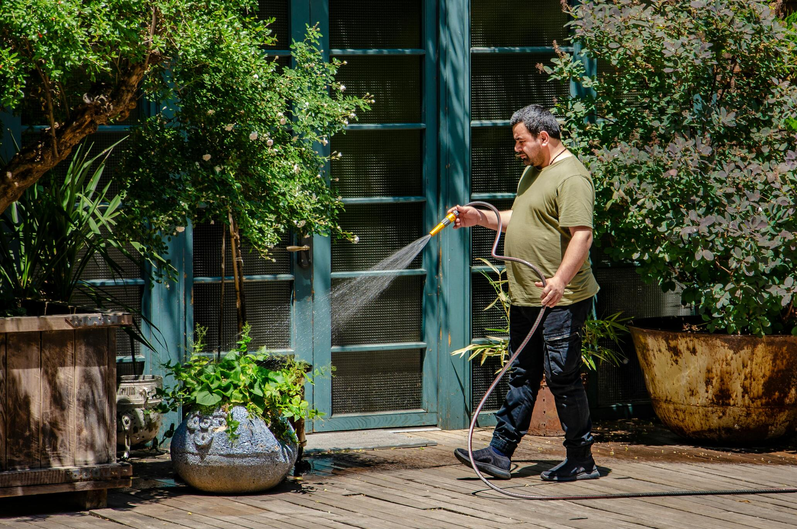

CONOCIMIENTOS COMPARTIDOS
Aprende, intercambia experiencias y comparte su pasión por las plantas.

¿Cómo
regar las plantas de exterior?
Las plantas de exterior son fáciles de cuidar si conoces sus necesidades y les dedicas tiempo y cariño.

¿Cómo cuidar las
plantas?
Si estás aquí, quizás quieras embellecer tu hogar con plantas o mejorar su crecimiento y desarrollo.

10
cosas que debes aprender.
El Servicio de Parques de Lima ofrece diez recomendaciones para el mantenimiento de tus plantas.

¿Cómo
mantener las plantas saludables?
La jardinería doméstica se popularizó en tiempos difíciles, brindando consuelo y transformando los espacios.
8
trucos caseros de jardinería.
Sigue estos consejos de jardinería y haz que tus plantas crezcan frondosas y saludables. ¡Anímate!

9
consejos para plantas de interior.
Todas las plantas comparten necesidades básicas, pero siempre valorarán tu tiempo y dedicación.